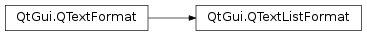

QTextListFormat¶
Synopsis¶
Functions¶
- def
indent() - def
numberPrefix() - def
numberSuffix() - def
setIndent(indent) - def
setNumberPrefix(numberPrefix) - def
setNumberSuffix(numberSuffix) - def
setStyle(style) - def
style()
Detailed Description¶
The
PySide2.QtGui.QTextListFormatclass provides formatting information for lists in aPySide2.QtGui.QTextDocument.A list is composed of one or more items, represented as text blocks. The list’s format specifies the appearance of items in the list. In particular, it determines the indentation and the style of each item.
The indentation of the items is an integer value that causes each item to be offset from the left margin by a certain amount. This value is read with
PySide2.QtGui.QTextListFormat.indent()and set withPySide2.QtGui.QTextListFormat.setIndent().The style used to decorate each item is set with
PySide2.QtGui.QTextListFormat.setStyle()and can be read with thePySide2.QtGui.QTextListFormat.style()function. The style controls the type of bullet points and numbering scheme used for items in the list. Note that lists that use the decimal numbering scheme begin counting at 1 rather than 0.Style properties can be set to further configure the appearance of list items; for example, the
ListNumberPrefixandListNumberSuffixproperties can be used to customize the numbers used in an ordered list so that they appear as (1), (2), (3), etc.:QTextListFormat listFormat; listFormat.setStyle(QTextListFormat::ListDecimal); listFormat.setNumberPrefix("("); listFormat.setNumberSuffix(")"); cursor.insertList(listFormat);See also
-
class
PySide2.QtGui.QTextListFormat¶ -
class
PySide2.QtGui.QTextListFormat(fmt) -
class
PySide2.QtGui.QTextListFormat(QTextListFormat) Parameters: - fmt –
PySide2.QtGui.QTextFormat - QTextListFormat –
PySide2.QtGui.QTextListFormat
Constructs a new list format object.
Creates a new list format with the same attributes as the
giventext format.- fmt –
-
PySide2.QtGui.QTextListFormat.Style¶ This enum describes the symbols used to decorate list items:
Constant Description QTextListFormat.ListDisc a filled circle QTextListFormat.ListCircle an empty circle QTextListFormat.ListSquare a filled square QTextListFormat.ListDecimal decimal values in ascending order QTextListFormat.ListLowerAlpha lower case Latin characters in alphabetical order QTextListFormat.ListUpperAlpha upper case Latin characters in alphabetical order QTextListFormat.ListLowerRoman lower case roman numerals (supports up to 4999 items only) QTextListFormat.ListUpperRoman upper case roman numerals (supports up to 4999 items only)
-
PySide2.QtGui.QTextListFormat.indent()¶ Return type: PySide2.QtCore.intReturns the list format’s indentation. The indentation is multiplied by the
QTextDocument.indentWidthproperty to get the effective indent in pixels.
-
PySide2.QtGui.QTextListFormat.numberPrefix()¶ Return type: unicode Returns the list format’s number prefix.
-
PySide2.QtGui.QTextListFormat.numberSuffix()¶ Return type: unicode Returns the list format’s number suffix.
-
PySide2.QtGui.QTextListFormat.setIndent(indent)¶ Parameters: indent – PySide2.QtCore.intSets the list format’s
indentation. The indentation is multiplied by theQTextDocument.indentWidthproperty to get the effective indent in pixels.
-
PySide2.QtGui.QTextListFormat.setNumberPrefix(numberPrefix)¶ Parameters: numberPrefix – unicode Sets the list format’s number prefix to the string specified by
numberPrefix. This can be used with all sorted list types. It does not have any effect on unsorted list types.The default prefix is an empty string.
-
PySide2.QtGui.QTextListFormat.setNumberSuffix(numberSuffix)¶ Parameters: numberSuffix – unicode Sets the list format’s number suffix to the string specified by
numberSuffix. This can be used with all sorted list types. It does not have any effect on unsorted list types.The default suffix is “.”.
-
PySide2.QtGui.QTextListFormat.setStyle(style)¶ Parameters: style – PySide2.QtGui.QTextListFormat.StyleSets the list format’s
style.See also
PySide2.QtGui.QTextListFormat.style()QTextListFormat.Style
-
PySide2.QtGui.QTextListFormat.style()¶ Return type: PySide2.QtGui.QTextListFormat.StyleReturns the list format’s style.
See also
PySide2.QtGui.QTextListFormat.setStyle()QTextListFormat.Style
© 2018 The Qt Company Ltd. Documentation contributions included herein are the copyrights of their respective owners. The documentation provided herein is licensed under the terms of the GNU Free Documentation License version 1.3 as published by the Free Software Foundation. Qt and respective logos are trademarks of The Qt Company Ltd. in Finland and/or other countries worldwide. All other trademarks are property of their respective owners.